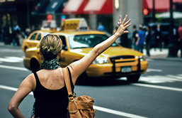

自2013年3月16日开始，中国游客申请美国签证的程序简化了许多，包括以下五个步骤：
- 步骤1：选择签证类型
一般而言，中国游客赴美观光应申请B-2旅行签证。 - 步骤2：在线填写并提交DS-160申请表格
https://ceac.state.gov/genniv/default.aspx - 步骤3：缴纳签证申请费用
签证申请费为150美元，申请人可以使用任意一家在中国发行的借记卡在线支付，也可以通过中信银行800多家营业网点或自动取款机缴纳费用。 - 步骤4：在使领馆页面预约面谈
http://www.ustraveldocs.com/cn_zh/cn-niv-typeb1b2.asp - 步骤5：进行面谈
按照约定的时间到美国大使馆或总领事馆面谈。需随身携带一份预约单打印件、DS-160确认页打印件、
一张最近六个月内的近照以及所有新旧护照。
出入境
按照美国法律，所有乘客在抵达美国本土时必须通过美国海关边防局（CBP）的入境和海关安全检查。因此，在飞往美国的航班上，旅客需要填写6059B通关申报表格，和白色的I-94表，即出入境记录卡。
在入境护照检查环节，大部分旅客都需要通过数字化出入境登记系统（US-VISIT）的检查。一名CBP官员将会记录你的电子指纹和照片，你可能需要回答一些问题，包括所从事的职业，是否为你的旅行准备好了足够的钱（最好准备一张信用卡）和你将于何时以何种方式离开美国 （准备好一份旅行日程）。建议独自带着未成年孩子旅行的父母和监护人提前准备好合法监护权的证明。
更多信息，请查看美国旅游局网站 租车
大多数租赁公司要求租车者有一个主要的信用卡，年龄至少25岁，并拥有有效驾驶执照。汽车租赁价格千差万别，机场可能有较便宜的租车费，但其他费用比较高；市中心区域可以接送租客。汽车租赁税在各个州是不同的，所以询问报价的时候建议问清楚。
更多信息，请查看Enterprise Holdings官网
公共交通

纽约、波士顿、华盛顿、洛杉矶等大城市地有庞大的地铁系统，但其他城市的地铁规模要小一些，通常市区里只有一两条地铁线路。美国多数城市和较大的村镇都有可靠的公共汽车系统，但大都与上下班时间对应，夜晚和周末车次有限，对游客来说不一定方便。
更多信息，请查看美国旅游局网站
纽约、波士顿、华盛顿、洛杉矶等大城市地有庞大的地铁系统，但其他城市的地铁规模要小一些，通常市区里只有一两条地铁线路。美国多数城市和较大的村镇都有可靠的公共汽车系统，但大都与上下班时间对应，夜晚和周末车次有限，对游客来说不一定方便。
更多信息，请查看美国旅游局网站
时制
美国采用夏令时，在3月的第二个周日把时钟拨快一个小时，到11月的第一个周日再拨慢一小时。
电源
美国的标准电压是110V，如需使用非美国标准的电子器件，请准备适配器。
货币
美国的货币是美元（＄）。一般来说，银行是兑换外国货币的最佳场所。如果想在机场或旅客信息中心兑换货币，最好先问清楚收费再兑换，因为那里的汇率经常会很低。
小费
在美国接受服务通常需要给小费，给机场和旅馆的搬运工的小费是每个包2美元，每车不低于5美元；给餐馆服务员的小费占餐费的15%-20%不等，除非账单上已事先收取了小费；给出租车司机的小费是车费的10%到15%不等，向下取整；给酒店服务生的小费是每晚2到4美元不等。
ATM
大部分银行的自动取款机是全天候可用的，在商场、机场、杂货店和便利店也能找到。大多ATM会对每次交易收取2.5美元或更多的服务费用。在ATM上使用信用卡取现通常会被扣取一定额度的手续费，请事先与你的信用卡公司进行确认。
网络
在美国旅游，游客不用担心联网的问题，大部分的旅馆和一些汽车旅馆都备有公共的电脑终端，或者是无线网络（有时是免费的）。即使是在一些偏远的小镇上，通常也都能找到一家设有无线网的咖啡店、网吧、图书馆或者旅馆。如果您是来自美国以外的地方，切记要为您的笔记本准备一个AC适配器，以及适用于美国插座的转接器。
电话
美国的国家区号是1。在美国，所有的电话号码都是由3位数的区号接7位数的当地号码组成的。一般来说，在呼叫同区号电话时，只需要拨打后面的7位，不过在一些地方即使是本地呼叫也要求拨打整个10位数的号码。所以当拨7位数不起作用时，不妨试试拨入整个10位数。
野营
许多联邦经营的公共土地和州立公园都提供野营。先到先得的原始野营点不提供任何设施，过夜费用从免费到低于10美元不等。而基本的野营点一般会提供厕所、饮用水、火堆和野餐桌，花费10到15美元一晚，基本都要提前预订。高级的野营点一般是在国家或州立公园里，它们有更好的设施，诸如淋浴、烧烤和房车停靠点等，花费则在13到40美元一晚。
饮酒
在美国酒吧和商店购买酒精饮品，需要出示带照片的身份证件来证明达到了法定饮酒年龄（也就是超过21周岁）。酒精的销售依据地方政府的规章而定，在一些郡县，星期天、午夜之后或早餐前是禁止酒精销售的，而在所谓的“无酒”的郡县，酒精销售是完全禁止的。
美国采用夏令时，在3月的第二个周日把时钟拨快一个小时，到11月的第一个周日再拨慢一小时。
电源
美国的标准电压是110V，如需使用非美国标准的电子器件，请准备适配器。
货币
美国的货币是美元（＄）。一般来说，银行是兑换外国货币的最佳场所。如果想在机场或旅客信息中心兑换货币，最好先问清楚收费再兑换，因为那里的汇率经常会很低。
小费
在美国接受服务通常需要给小费，给机场和旅馆的搬运工的小费是每个包2美元，每车不低于5美元；给餐馆服务员的小费占餐费的15%-20%不等，除非账单上已事先收取了小费；给出租车司机的小费是车费的10%到15%不等，向下取整；给酒店服务生的小费是每晚2到4美元不等。
ATM
大部分银行的自动取款机是全天候可用的，在商场、机场、杂货店和便利店也能找到。大多ATM会对每次交易收取2.5美元或更多的服务费用。在ATM上使用信用卡取现通常会被扣取一定额度的手续费，请事先与你的信用卡公司进行确认。
网络
在美国旅游，游客不用担心联网的问题，大部分的旅馆和一些汽车旅馆都备有公共的电脑终端，或者是无线网络（有时是免费的）。即使是在一些偏远的小镇上，通常也都能找到一家设有无线网的咖啡店、网吧、图书馆或者旅馆。如果您是来自美国以外的地方，切记要为您的笔记本准备一个AC适配器，以及适用于美国插座的转接器。
电话
美国的国家区号是1。在美国，所有的电话号码都是由3位数的区号接7位数的当地号码组成的。一般来说，在呼叫同区号电话时，只需要拨打后面的7位，不过在一些地方即使是本地呼叫也要求拨打整个10位数的号码。所以当拨7位数不起作用时，不妨试试拨入整个10位数。
野营
许多联邦经营的公共土地和州立公园都提供野营。先到先得的原始野营点不提供任何设施，过夜费用从免费到低于10美元不等。而基本的野营点一般会提供厕所、饮用水、火堆和野餐桌，花费10到15美元一晚，基本都要提前预订。高级的野营点一般是在国家或州立公园里，它们有更好的设施，诸如淋浴、烧烤和房车停靠点等，花费则在13到40美元一晚。
饮酒
在美国酒吧和商店购买酒精饮品，需要出示带照片的身份证件来证明达到了法定饮酒年龄（也就是超过21周岁）。酒精的销售依据地方政府的规章而定，在一些郡县，星期天、午夜之后或早餐前是禁止酒精销售的，而在所谓的“无酒”的郡县，酒精销售是完全禁止的。